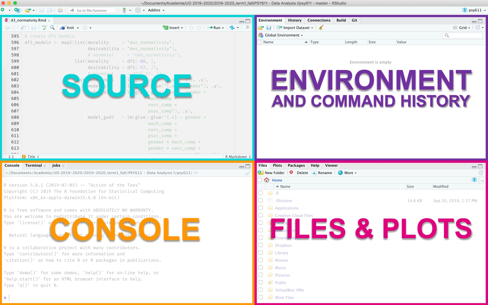
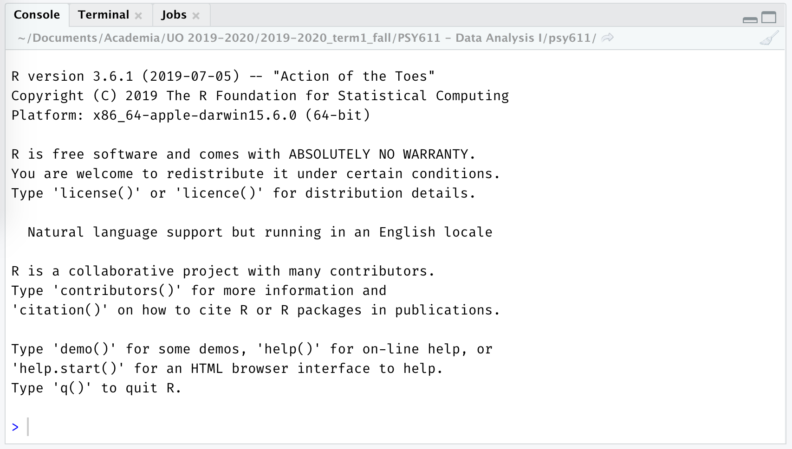
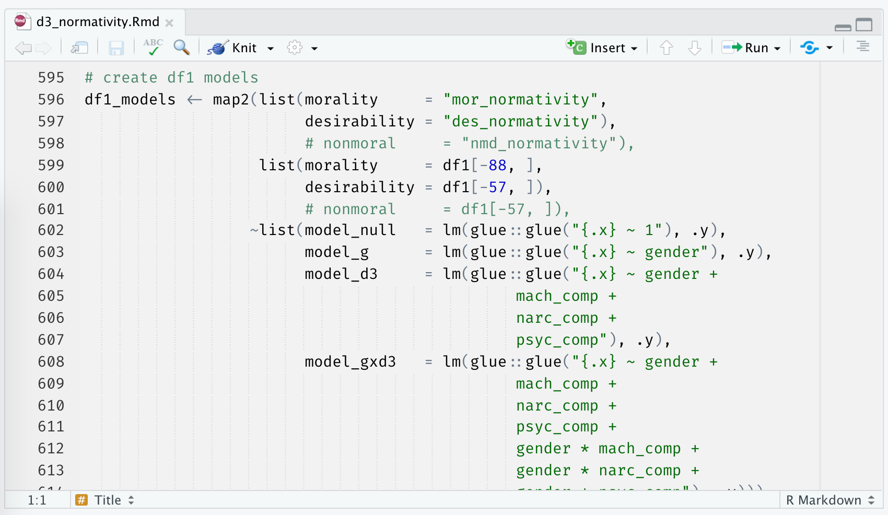
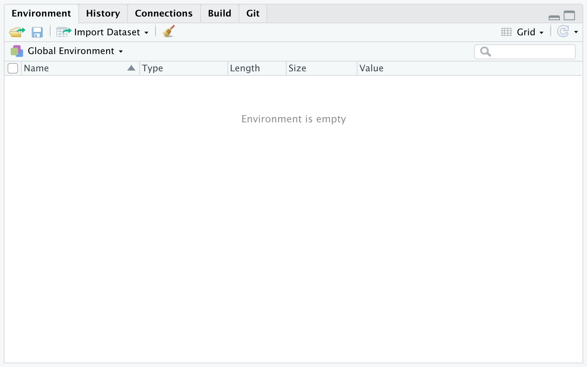
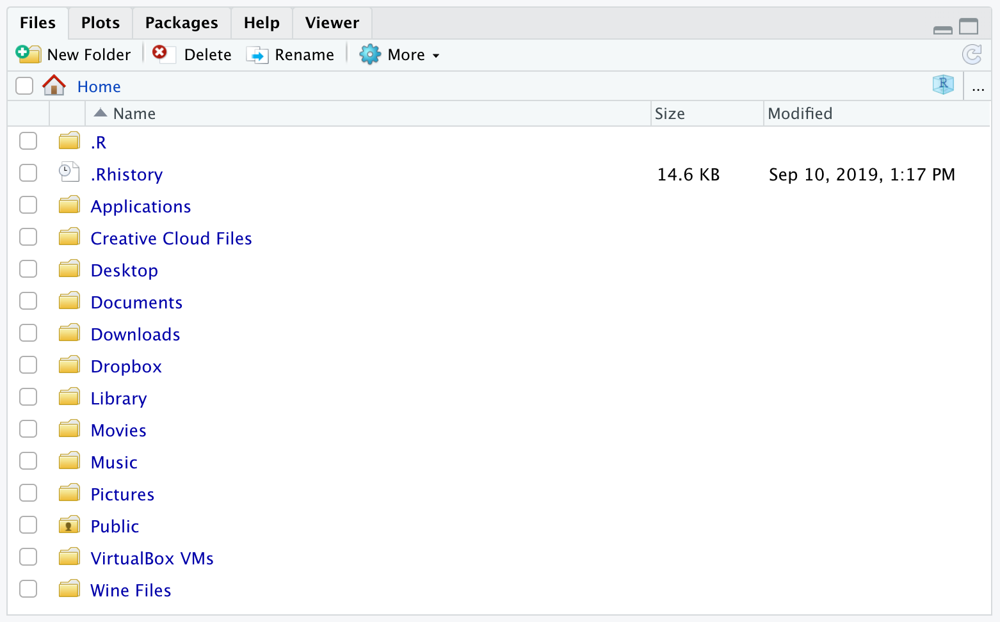

Chapter 4 Features of RStudio
As shown in the image below, an RStudio session is split into four sections called panes: the console, the source pane, the environment/history pane, and the succinctly named files/plots/packages/help pane.

4.1 The Console
In RStudio, the console is the access point to the underlying R Engine. It evaluates the code you provide it, including code called using the the source pane. You can pass commands to the R Engine by typing them in after the >.

Think of the Console like a texting app (or for those who grew up in the 90s, AIM). The Console is where you send messages to your friend, R, and they (sometimes) respond. Once you’ve sent a message, you can no longer edit it. And once it’s been said, you can’t take it back.
4.2 Source
The source pane shows you a collection of code called a script. In R, we primarily work with R Script files (files ending in .R) or R Markdown documents (files ending in .Rmd).

If the Console is your texting app, then the Source pane is where you can draft your message, edit it, make sure it comes across as friendly and not passive-aggressive, etc.
These files can be saved and restored later. This is really useful if (1) you plan on spreading out your work across more than one day, (2) you want to keep track of what analyses you’ve run and the way you set up those analyses, or (3) you want to share your analysis with collaborators or readers. Perhaps one of these applies to you.
You can send code from Source to the Console using Command+Enter (Mac) or Ctrl+Enter (PC).
4.3 Environment/History
The environment/history pane shows, well, your environment and history. Specifically, if you have the “Environment” tab selected, you will see a list of all the variables that exist in your global environment. If you have the “History” tab selected, you will see previous commands that were passed to the R Engine.

4.4 Files/Plots/Packages/Help
The final pane—the files/plots/packages/help pane–includes a number of helpful tabs. The “Files” tab shows you the files in your current working directory, the “Plots” tab shows you a preview of any plots you have created, the “Packages” tab shows you a list of the packages currently installed on your computer, and the “Help” tab is where help documentation will appear. We will discuss packages and help documentation later in this lab.
